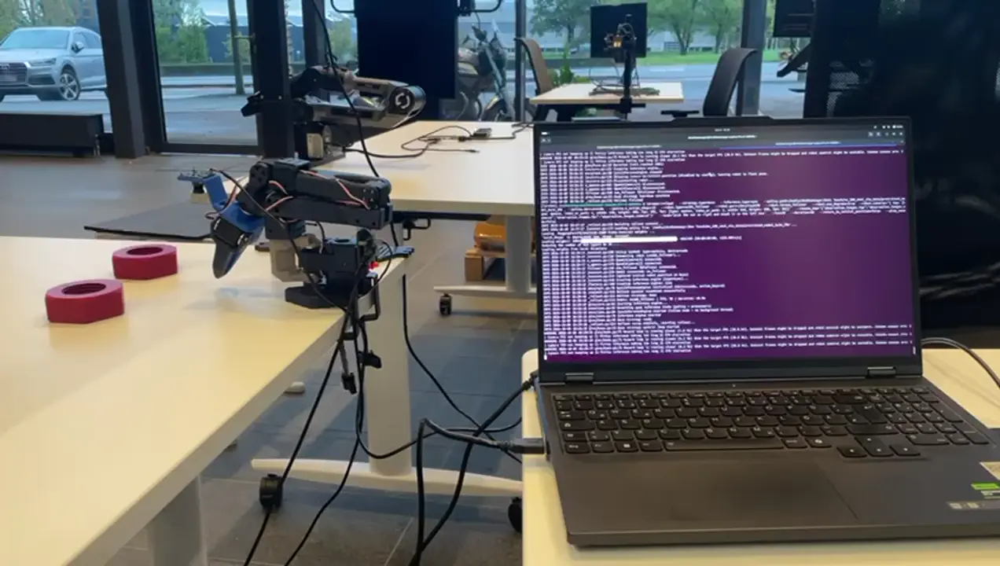
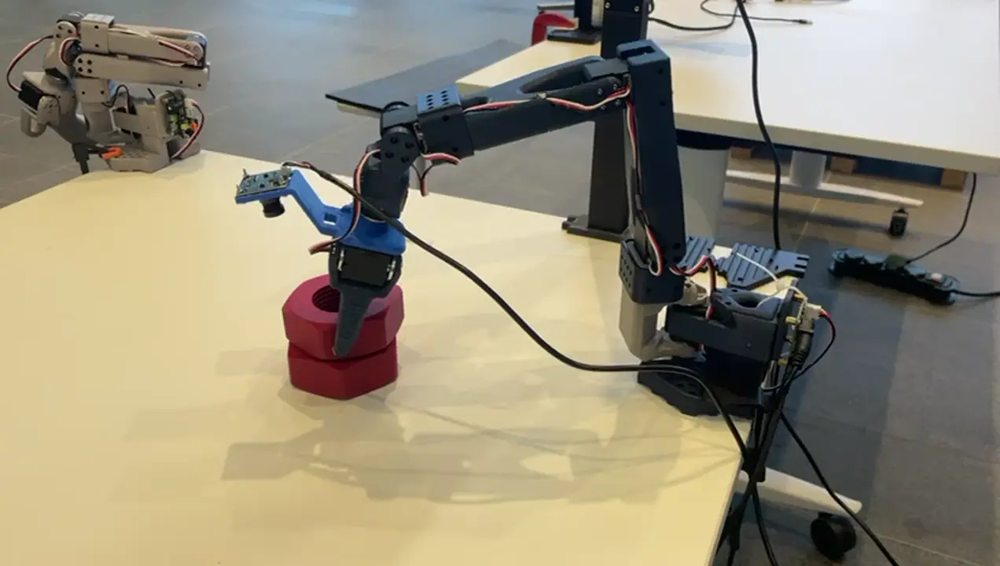
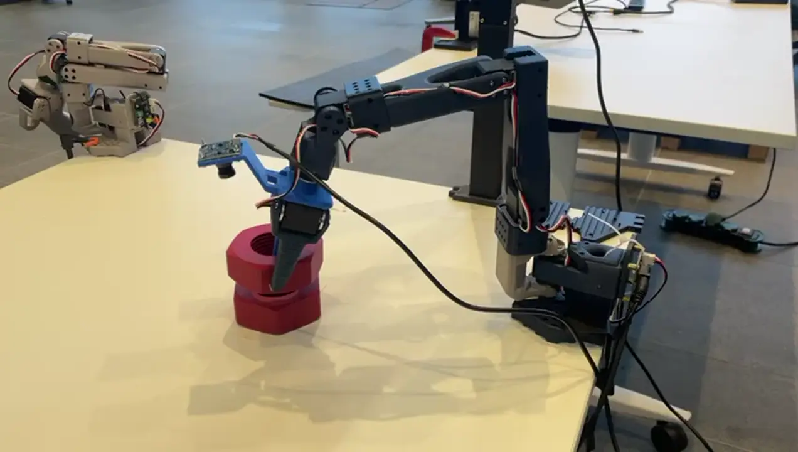
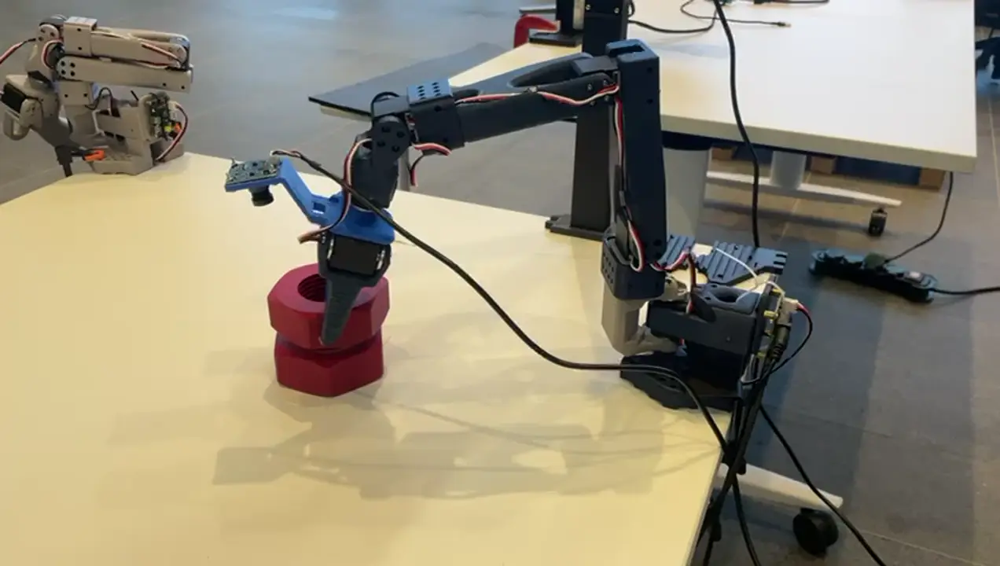

SmolVLA nut stacking
Three SmolVLA policies fine-tuned on 80 physical SO-101 demonstrations and scored on the real arm. The best reached 75% full-stack success.
- Best checkpoint
- 75% full stack, 88% pick, 92% grasp
- Base policy
- lerobot/smolvla_base
- Dataset
- 160 episodes, 77,104 frames
Setup
- Robot
- SO-100/SO-101-style follower arm, driven by a leader arm for teleoperation
- Cameras
- Two 640×480 streams: a top view and a first-person view
- State, action
- 6-DoF joint state in, 6-DoF joint actions out
- Task
- Stack one nut on another
Data
I collected 80 additional demonstrations and aggregated them with the original 80 into one LeRobot v3.0 dataset: 160 episodes, 77,104 frames at 30 fps, about 42.8 minutes of leader-follower teleoperation, with both camera streams AV1-encoded. All three policies were trained on the first 80 episodes. The dataset has no held-out split.




Best checkpoint
- Training
- Batch size 16, 20,000 steps, AdamW, FP32
- Trained parts
- Action expert and state projection; the vision encoder stays frozen
- Augmentation
- None
- Inputs
- Both camera streams and the 6-DoF joint state
- Output
- 6-DoF joint actions in chunks of 50
Results
| Checkpoint | Grasp or better | Pick or better | Full stack |
|---|---|---|---|
| Batch 16, 20k steps | 92% | 88% | 75% |
| Batch 64, 10k steps | 55% | 52% | 40% |
| Batch 64, 20k steps | 90% | 90% | 0% |
Where it failed
- Batch 64, 20,000 stepsGrasped and picked the nut in 90% of rollouts, and completed no stacks.
- Batch 64, 10,000 stepsReached a grasp in 55% of rollouts and finished the stack in 40%.
- Evaluation scopeThere is no held-out split, so these numbers describe the training task and setup.